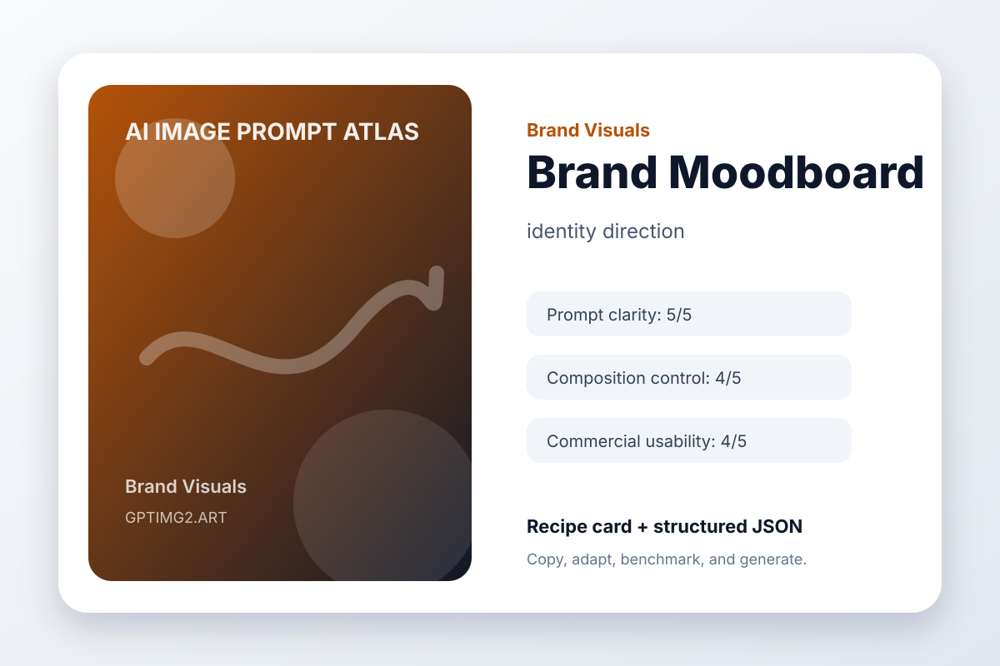

Brand Visuals / medium
Brand Moodboard
identity direction

The Idea
Brand Moodboard uses prompt structure to explore a repeatable brand direction for an identity direction: a moodboard for a calm productivity app brand.
Creative Brief
Explore an identity direction that feels like the start of a coherent brand system, not a one-off graphic.
The brand exploration is a moodboard for a calm productivity app brand. Keep the visual language consistent enough to suggest a system: palette, shape logic, spacing, and tone should agree.
Art direction: polished, practical, visually specific, and suitable for a public prompt library.
Avoid: warped geometry, random logos, accidental text, duplicated objects, messy backgrounds, watermark, and low-resolution artifacts.
Guardrails
watermark, unreadable text, random logos, warped hands or objects, duplicated subjects, messy background, low-resolution artifacts, unwanted typography
Why This Prompt Works
- It starts with the outcome the image needs to serve, so the model is not guessing the format.
- The subject is concrete enough to anchor the scene before style words enter the prompt.
- The art direction describes what success should feel like, not just what should appear.
- The avoid list removes the common visual failures that usually make AI images hard to use.
Variation Prompts
- Make a minimal identity direction version with more whitespace.
- Make a bold social-media-ready version with stronger contrast.
- Make a premium editorial version with refined lighting and texture.
Recipe Metadata
| Category | Brand Visuals |
|---|
| Use case | identity direction |
|---|
| Input type | text prompt |
|---|
| Aspect ratio | 1:1 or 16:9 |
|---|
| prompt clarity | 5/5 |
|---|
| composition control | 4/5 |
|---|
| text accuracy | 3/5 |
|---|
| object consistency | 4/5 |
|---|
| commercial usability | 4/5 |
|---|
Try this workflow on GPTImg2